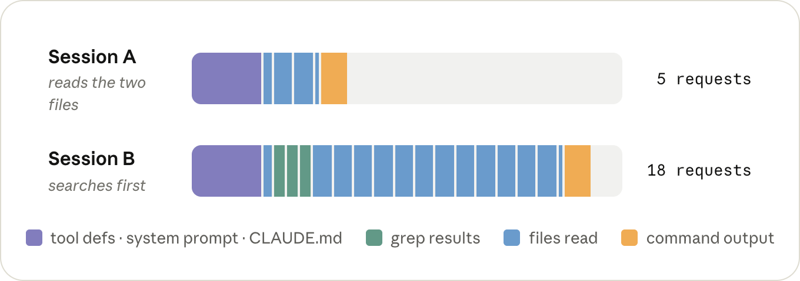
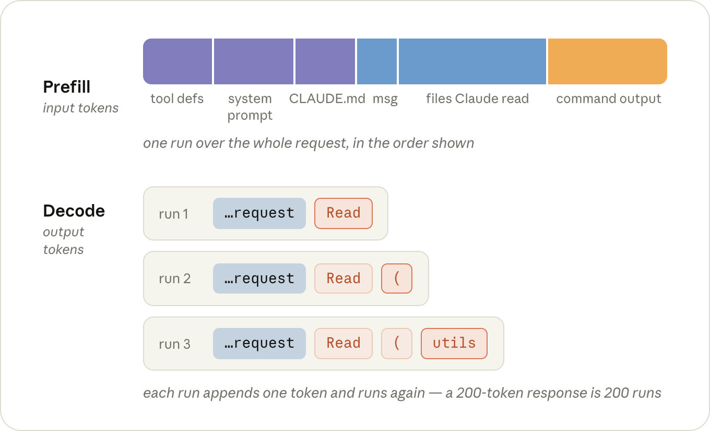
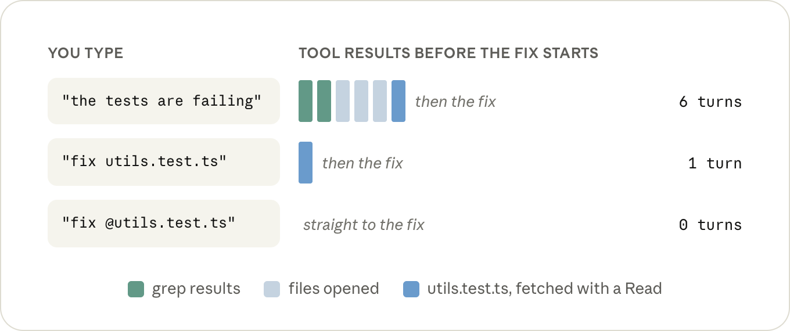
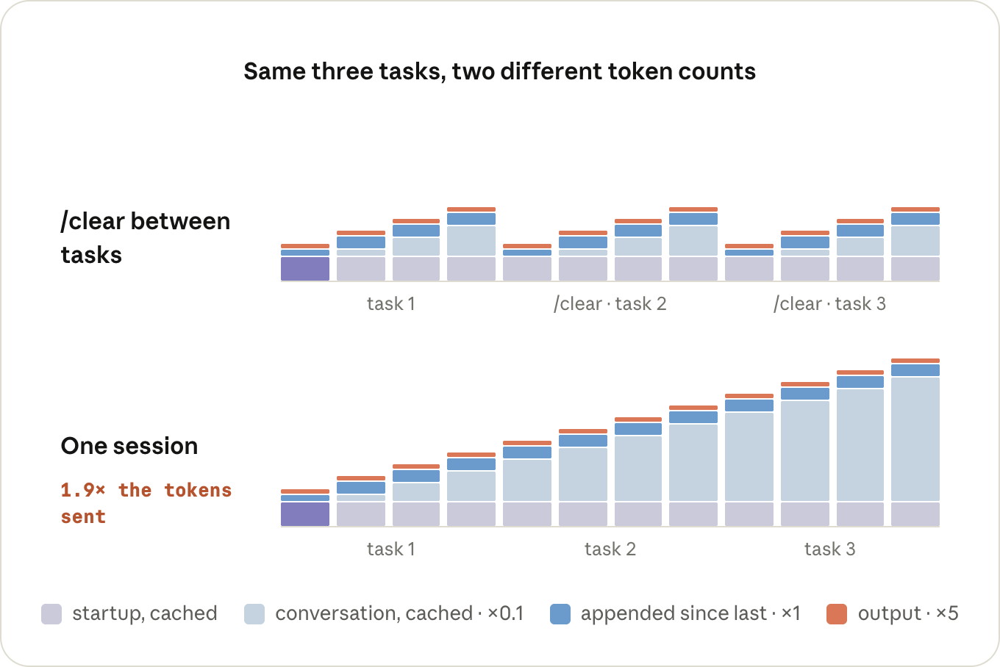
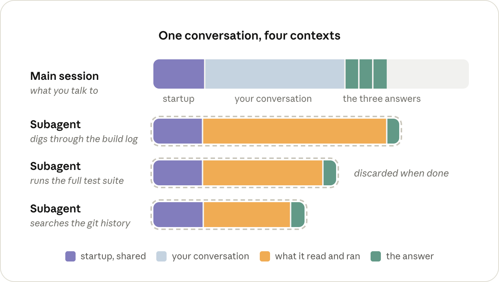
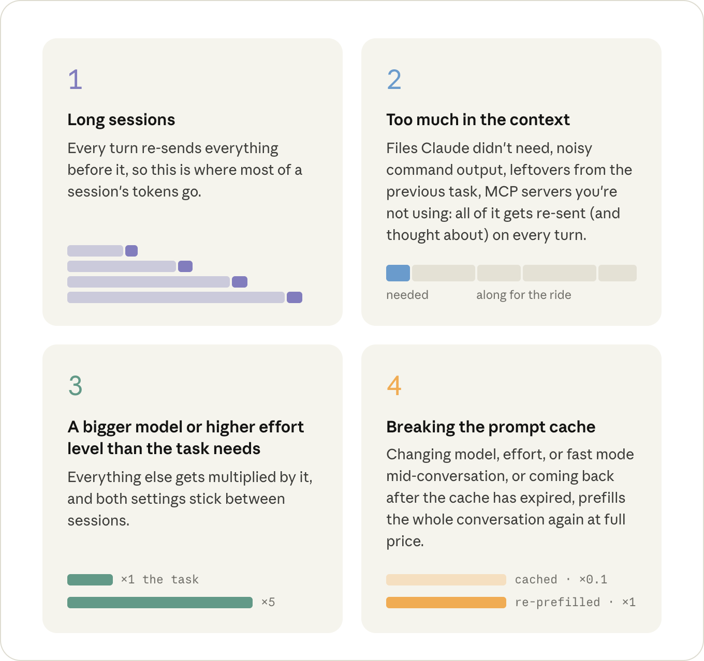

토큰 하나하나가 실제로 내가 요청한 일에 쓰이도록 세션을 굴리는 법 — 토큰 값을 결정하는 것은 무엇이고, 한 세션이 보내는 토큰 수를 결정하는 것은 무엇인가.
원문이 맨 앞에 걸어둔 여섯 줄 요약이다.
/clear — 이전 작업의 관계없는 맥락이 계속 모델에 다시 실려 가는 것을 막아 토큰 사용량을 줄인다./context를 한 번 실행 — CLAUDE.md, MCP 툴 정의 등 뭐가 이미 올라와 있는지 보여주므로 불필요한 것을 걷어낼 수 있다./compact — 프롬프트 캐시는 한 시간이면 만료되는데, 대화 요약은 아직 캐시가 살아 있을 때 하는 편이 훨씬 싸다.얼마 전까지만 해도 코드를 쓰는 도구는 정액제(또는 무료)였다. 에디터 값은 그날 오후에 테스트 하나를 고치든 쉰 개를 고치든 똑같았고, 그래서 개별 작업에 그 작업만의 가격이라는 게 사실상 없었다.
Claude Code 같은 에이전틱 코딩 도구에서는 사정이 다르다. 같은 작업을 끝내도 어떻게 쓰느냐에 따라 드는 비용이 달라진다.
원문이 드는 예시는 이렇다. 어떤 세션에서는 Claude가 테스트 파일과 그 테스트가 검사하는 파일을 읽고, 수정하고, 몇 턴 만에 끝낸다. 다른 세션에서는 먼저 저장소를 grep으로 훑고, 결국 같은 두 파일에 도달하기까지 열 몇 개 파일을 읽으며, 그 모든 턴이 오늘 아침부터 대화에 쌓인 나머지 전부를 같이 끌고 다닌다.

결과물은 똑같은 수정이다. 다만 거기에 쓴 토큰 수가 달랐고, 그 내내 모델은 필요하지도 않은 열 개의 파일을 함께 머릿속에 두고 생각해야 했다.
그래서 원문이 말하는 "토큰을 효율적으로 쓴다"는 건 전체 토큰을 덜 쓰라는 뜻이 아니다. 쓰는 토큰이 실제로 내가 요청한 그 일에 가도록 만든다는 뜻이다.
글은 이 순서로 파고든다 — 토큰 하나의 값은 무엇이 결정하는가, 한 세션이 보내는 토큰의 개수는 무엇이 결정하는가, 그리고 그게 세션 운영 방식에 무슨 의미인가.
청구는 토큰 단위로 되지만, 실제로 돈을 내는 대상은 추론(inference)이다. GPU(혹은 TPU 등 모델이 돌아가는 하드웨어)가 내 토큰 위로 모델을 한 번 굴리는 데 걸리는 시간 말이다.
그 시간을 좌우하는 요소는 세 가지다. 어떤 모델을 돌리는가, 그 토큰이 입력(들어가는)인가 출력(나오는)인가, 그리고 캐시되어 있었는가.
큰 모델은 입력 토큰에도 출력 토큰에도 더 많은 일을 한다. 어떤 작업에 어떤 모델이 값어치를 하는지는 그 자체로 별도 주제이고, 원문은 Choosing a Claude model and effort level in Claude Code에서 다뤘다고 안내한다.
이 글에서 알아야 할 건 하나다. 앞으로 나올 모든 이야기에 모델 가격이 곱해진다. 문제가 정말로 어렵거나 모호할 때 큰 모델을 쓰고, 일이 반복적이고 뻔할 때는 작은 모델을 쓴다.
요청 하나는 GPU를 두 단계로 지나가고, 두 단계의 비용이 다르다.
먼저 프리필(prefill) 단계에서 모델은 요청과 맥락을 읽는다 — 시스템 프롬프트, CLAUDE.md, 내 메시지, 그리고 그 이후 대화에 추가된 모든 것(Claude가 읽은 파일들, 실행한 명령의 출력). 이게 입력 토큰이다.
그다음 디코드(decode) 단계에서 출력 토큰을 쓴다 — 사고 과정, 도구 호출, 그리고 화면에 보이는 텍스트. 이건 한 번에 한 토큰씩 일어난다. 200토큰짜리 응답은 모델을 200번 연달아 돌리는 것이다. 토큰당으로 보면 디코드가 GPU를 훨씬 오래 붙잡고 있고, 그래서 출력 가격이 입력의 약 5배다.

한 세션의 출력 토큰 중 상당수는 사고(thinking) 토큰이고, 턴마다 얼마나 생각할지를 정하는 게 노력 수준이다. 모델과 마찬가지로 /effort로 고른 값은 다음 세션에도 기본값으로 남는다.
/model과 /effort를 한 번씩 실행해 지금 뭘 쓰고 있는지 확인하라.
둘 다 지난번에 고른 값을 기억하고 있으므로, 그 선택이 의도한 선택이어야 한다.
MAX_THINKING_TOKENS=0 claude로 그 세션만 사고를 끈다
(Fable 5는 예외). /effort low보다 한 단계 아래다.
어떤 요청이 서버가 방금 본 요청과 정확히 같은 토큰으로 시작한다면, 공유되는 그 앞부분의 상태는 계산해도 똑같이 나온다. 그래서 서버는 지난번 상태를 그대로 들고 있다가 그 뒤에 오는 부분만 프리필하면 된다. 이게 프롬프트 캐싱이다.
캐시에서 읽는 비용은 입력 가격의 0.1배다. 계산하는 대신 상태를 불러오기만 하기 때문이다. 캐시에 쓰는 비용은 일반 입력보다 조금 비싸서 최대 2배인데, 서버가 그 상태를 이후에도 붙들고 있어야 해서다. 하지만 쓰기는 토큰당 한 번뿐이고, 0.1배 읽기는 그 뒤의 모든 턴마다 일어난다.
Claude Code는 매 요청마다 프롬프트 캐시를 알아서 관리한다. 켤 것도 없다. 다만 깨뜨릴 수는 있고, 그래서 어떻게 피하는지 아는 게 중요하다.
원문은 "utils.test.ts에서 실패하는 테스트를 고쳐줘"라고 쳤을 때 Claude Code가 실제로 무엇을 보내는지를 단계별로 보여준다.
utils.test.ts에 대한 Read 호출로 응답한다(출력 토큰). Claude Code가 파일을 읽어 대화에 덧붙이고 전체를 다시 보낸다(입력 토큰). 이번엔 1번 요청의 모든 것이 10분의 1 가격으로 캐시에서 읽히고, 정가로 프리필되는 건 새로 생긴 것 — Read 호출과 그 파일뿐이다.npm test를 실행한다(출력). 테스트 출력이 덧붙여지고 전체가 다시 나가며, 새로운 부분은 그 테스트 출력뿐이다(입력).작은 수정 하나에 요청 다섯 번이고, 그 다섯 번 모두가 그 시점까지의 대화 전체를 담고 있었다. 전형적인 한 턴은 이렇게 기울어져 있다 — 들어가는 건 수만 토큰, 나오는 건 수백 토큰. 하지만 그 턴에서 새로운 것만 정가로 프리필된다.
그래서 턴당 청구서는 이 셋이 전부다. 히스토리에 대한 캐시 읽기, 새로 생긴 것에 대한 정가 입력, 그리고 응답에 대한 출력 가격. 구독 플랜에서도 마찬가지다. 가격이 직접 보이지는 않지만, 한도를 깎아 내리는 건 결국 같은 요청들이다.
캐시는 요청의 맨 앞부터 순서대로 일치해야 하고, 요청은 항상 같은 순서로 나간다 — 툴 정의, 그다음 시스템 프롬프트, 그다음 대화(CLAUDE.md는 대화의 맨 앞).
이 앞부분(prefix) 중 뭐라도 바뀌면 그 뒤는 전부 다시 프리필된다. 대화 끝에 붙는 도구 결과는 이상적인 경우다. 뒤에 아무것도 없기 때문이다. 캐시를 버리게 만드는 건 요청의 더 앞쪽을 바꾸거나, 캐시의 키가 되는 값을 바꾸는 것이다.
/model — 모델마다 자기 캐시가 따로 있어서, 다음 턴에 대화 전체가 정가로 다시 프리필된다. (플랜 모드를 드나들 때마다 모델을 바꾸는 opusplan도 포함이다.)/effort — 노력 수준도 캐시 키의 일부라 같은 이야기다. /model과 /effort 둘 다 대화 중간에 바꾸면 확인을 받는 이유가 이것이다./compact — 대화가 더 짧은 것으로 교체되므로 그 안의 어떤 것도 더는 일치하지 않는다(앞에 있는 시스템 프롬프트는 살아남는다). 요약을 쓰는 것 자체는 옛 대화가 아직 캐시에 있는 동안엔 싸다. 그래서 긴 휴식 뒤보다 앞에 하는 게 훨씬 저렴하다.ENABLE_PROMPT_CACHING_1H=1로 API 키도 1시간이 된다). 그보다 늦게 돌아오면 다음 턴에 대화 전체가 다시 프리필된다. 오래된 세션을 재개하는 경우도 거의 항상 그렇다. 그때쯤엔 캐시가 사라져 있고, 시스템 프롬프트는 어차피 실행 시점에 다시 구성된다.그렇다고 모델이나 노력 수준을 절대 바꾸지 말라는 뜻은 아니다. 싸게 바꿀 수 있는 순간(세션 시작 직후, /clear 직후)과 비싸게 치르는 순간(긴 대화의 한복판)이 따로 있다는 뜻이다.
/compact 대신 그 직전으로 /rewind하라.
되감기는 그 턴들을 끝에서 잘라낼 뿐이라 앞부분은 여전히 캐시돼 있고 비용이 들지 않는다.
컴팩트는 대화 전체를 다시 쓰므로 항상 비용이 든다.
여기서 핵심은 하나다. 무엇도 한 번만 보내지지 않는다. 대화에 들어간 모든 것 — Claude가 읽은 파일이든 실행한 명령의 출력이든 — 은 세션이 끝날 때까지 그 뒤의 모든 턴마다 다시 보내진다.
캐시되어 있으니 그 재전송 하나하나는 싸다. 하지만 싼 것이 공짜는 아니고, 게다가 그것들은 모델이 매 턴 헤집고 다녀야 하는 컨텍스트 자리를 차지한다.
세션의 비용 모델은 사실상 이게 전부다 — 컨텍스트에 얼마나 많은 토큰이 들어가는가, 그것이 몇 턴 동안 머무는가, 그리고 동시에 몇 개의 컨텍스트를 돌리고 있는가.
컨텍스트의 일부는 내가 뭘 치기도 전에 이미 들어 있다 — 툴 정의, 시스템 프롬프트, CLAUDE.md, 그리고 시작할 때 로드되는 나머지.
/context를 실행해 뭐가 들어 있는지 보라.
CLAUDE.md에는 구체적인 지시만 남기고, 워크플로 전용 지시는 스킬(skill)로 옮겨라. 스킬은 실제로 쓰일 때만 로드된다.
이번 세션에 필요 없는 MCP 서버가 있으면 /mcp로 꺼라.
세션 중에 추가되는 것들은 거의 전부 도구 결과다 — Claude가 읽는 파일들, 그리고 실행하는 명령들의 출력.
Claude가 얼마나 많이 읽느냐는 대체로 스스로 알아내야 하는 양에 달려 있다. "테스트가 깨졌어"라고만 하면 먼저 어떤 테스트인지부터 알아내야 한다. grep 한두 번, 어느 게 관련 있는지 보려고 파일 몇 개 열어보기, 그리고 그 모든 결과는 쓸모가 다한 뒤에도 한참 컨텍스트에 남는다.
"utils.test.ts에서 실패하는 테스트를 고쳐줘"는 검색 단계를 건너뛰고 파일 하나에 대한 Read 호출 한 번이 든다. 그리고 "@utils.test.ts에서 실패하는 테스트를 고쳐줘"는 그 Read 호출조차 들지 않는다.

컨텍스트를 채우는 또 하나는 Claude가 실행한 명령의 출력이다. 테스트든 빌드든 git log든, 찍히는 것은 읽은 파일과 똑같이 대화에 덧붙여지고 똑같은 턴 수만큼 남는다.
여기서 반전은, 정말 큰 출력은 오히려 괜찮다는 점이다. 30,000자를 넘으면 Claude Code가 출력을 파일로 쓰고 대화에는 짧은 미리보기와 경로만 넣는다(바꾸고 싶다면 BASH_MAX_OUTPUT_LENGTH).
문제는 그 아래 전부다. 통과한 테스트 400개를 한 줄씩 찍는 테스트 러너는 그 한도에 못 미치고, 그 400줄은 이제 남은 모든 턴의 일부가 된다.
Claude가 알아서 플래그와 tail로 처리해 주는 경우가 많다. Claude에게 맡기고 싶지 않다면, 문서에 시끄러운 명령을 실행 전에 다시 써서 필요한 줄만 돌아오게 하는 작은 훅이 나와 있다.
npx vitest run <file> --reporter=dot").
아주 작은 추가지만, 그 뒤의 모든 세션에서 한 턴과 수백 줄의 출력을 아낀다.
긴 세션 하나는 같은 일을 짧은 세션 몇 개에 나눠 하는 것보다 비싸다. 그것도 생각보다 훨씬 비싼데, 40번째 턴은 그 앞의 39개 턴을 같이 다시 읽고 있기 때문이다.
세션의 컨텍스트는 짧고 관련성 높게 유지해야 한다. 한 작업의 맥락을 다음 작업으로 끌고 가지 마라 — 새로운 걸 시작할 땐 /clear, 같은 작업의 앞부분이 끝났을 땐 /compact.

/clear 전에 /rename하라.
/compact할 때는 무엇을 남길지 알려주고, 늘 같은 내용이라면 CLAUDE.md에 "Compact instructions" 섹션을 넣어둬라.
1M 모델을 쓰면서 오토 컴팩트 안전망을 예전 위치에 두고 싶다면 /autocompact 200k로 되돌릴 수 있다(Claude Code v2.1.221 이상 필요).
내가 타이핑하지 않는 동안 일어나는 턴도 눈여겨봐야 한다. /loop는 설정한 그 세션에서 온전한 한 턴으로 발화하며, 매번 그 대화 전체를 함께 끌고 간다. 마지막 턴으로부터 한 시간이 넘었다면 거기에 캐시 미스까지 얹힌다. 다른 터미널에서 새 세션을 열고 거기서 루프를 돌려라.
무언가를 내 컨텍스트 밖에 두는 다른 방법은 그것을 다른 컨텍스트에서 일어나게 하는 것이고, 그게 서브에이전트의 용도다. 서브에이전트는 자기만의 컨텍스트 윈도를 갖고, 자기 시스템 프롬프트와 도구, 그리고 내 CLAUDE.md를 갖지만 내 대화는 갖지 않는다. 자기 턴을 돌리고, 메인 세션으로 돌아오는 건 그 답변뿐이다. 나머지는 끝나는 즉시 버려진다.
내 대화를 갖지 않는 대가는, 메인 세션이 이미 갖고 있던 것을 서브에이전트가 다시 읽어야 할 때가 있다는 것이다. 그러는 동안 자기 턴 비용도 낸다. 작은 일이라면 그냥 오버헤드다.
값어치를 하는 건 보관할 필요 없는 출력이 잔뜩 나오는 일, 예컨대 로그를 훑는 작업이다. 그런 종류의 일에는 Claude가 알아서 서브에이전트를 꺼내 드는 경우가 많고, 그러지 않을 때는 직접 요청하면 된다("이 로그는 서브에이전트에서 훑어줘"). 다만 메인 세션은 서브에이전트가 보고하기로 선택한 것만 받는다는 점은 염두에 둘 것.

model: haiku(또는 sonnet)를 지정하라.
그러지 않으면 메인 세션이 돌고 있는 모델로 실행된다.
지금까지 나온 것 중에서 눈여겨볼 만한 건 네 가지이고, 원문은 대략 비용이 큰 순서로 정리한다.

설치 명령은 아래와 같다.
# macOS / Linux
curl -fsSL https://claude.ai/install.sh | bash
# Windows (PowerShell)
irm https://claude.ai/install.ps1 | iex또는 데스크톱, VS Code, JetBrains, 웹, Slack에서도 쓸 수 있고, 문서를 먼저 읽어도 된다.
관련 링크: Claude Code 사용해 보기 · 개발자 문서 · 요금 보기 · 영업팀 문의